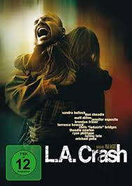
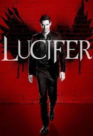
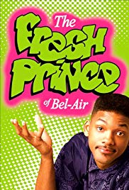

I'm a 19 year old guy from Berlin who likes to travel and get to know new people.
Also I'm currently participating in the Le Wagon bootcamp.
Here take a look at their page|  |
Crash"Crash is a 2004 American drama film produced, directed, and co-written by Paul Haggis. The film features racial and social tensions in Los Angeles. A self-described "passion piece" for Haggis, Crash was inspired by a real-life incident, in which his Porsche was carjacked in 1991 outside a video store on Wilshire Boulevard.The film deals with racism in a rather impartial approach; rather than separating the characters into victims and offenders, victims of racism are often shown to be prejudiced themselves in different contexts and situations; racist remarks and actions are often shown to stem from ignorance and misconception rather than malice." |
|  |
Lucifer"Lucifer is an American urban fantasy police procedural comedy-drama television series developed by Tom Kapinos that premiered on Fox on January 25, 2016. It is based on the DC Comics character created by Neil Gaiman, Sam Kieth, and Mike Dringenberg taken from the comic book series The Sandman, who later became the protagonist of a spin-off comic book series, both published by DC Comics' Vertigo imprint.The series revolves around Lucifer Morningstar (Tom Ellis), the Devil, who abandons Hell for Los Angeles where he runs his own nightclub and becomes a consultant to the LAPD. The ensemble and supporting cast include Lauren German as Detective Chloe Decker, Kevin Alejandro as Detective Daniel "Dan" Espinoza, D. B. Woodside as Amenadiel, Lesley-Ann Brandt as Mazikeen, and Rachael Harris as Dr. Linda Martin." |
|  |
The Fresh Prince of Bel-AirThe Fresh Prince of Bel-Air is an American sitcom that originally aired on NBC from September 10, 1990 to May 20, 1996. The show stars Will "The Fresh Prince" Smith as a fictionalized version of himself, a street-smart teenager from West Philadelphia who is sent to move in with his wealthy aunt and uncle in their Bel Air mansion after getting into a fight in his hometown. In the series, his lifestyle often clashes with the lifestyle of his relatives in Bel Air. The series ran for six seasons and aired 148 episodes. |
Boyz II Men"Boyz II Men is an American R&B vocal group from Philadelphia, Pennsylvania, best known for emotional ballads and a cappella harmonies. They are currently a trio composed of baritone Nathan Morris alongside tenors Wanya Morris and Shawn Stockman. During the 1990s, Boyz II Men found fame on Motown Records as a quartet including bass Michael McCary, who left the group in 2003 due to health issues." |
|
Eminem"Marshall Bruce Mathers III (born October 17, 1972), known professionally as Eminem, is an American rapper, songwriter, record producer, record executive, film producer, and actor. He is consistently cited as one of the greatest and most influential artists of all time in any genre, with Rolling Stone placing him in its list of the 100 Greatest Artists of All Time and labeling him the "King of Hip Hop" or simply "The Greatest ever" |
|
Avici"Tim Bergling, known professionally as Avicii, was a Swedish musician, DJ, remixer, and record producer" |